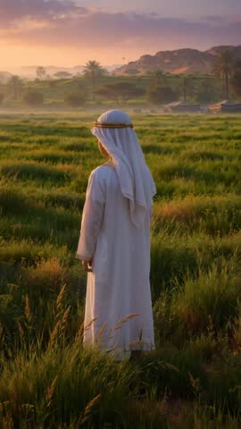

بِسْمِ اللَّهِ الرَّحْمَنِ الرَّحِيمِ
圣人故事儿童集
在温柔的光影里，和孩子一起聆听先知的故事，学习诚实、忍耐、勇气与信靠。

故事分类
选择想要探索的故事
穆哈穆德三部曲
从童年、启示到使命完成
全部故事
完整 26 集 · 中英双语配音
圣训小故事
完整 40 集 · 中文配音
古兰经小故事
4 集 · 中文配音
即将推出
这个分类正在准备中，敬请期待。
每日祈祷求护词
阿语原文、中文与 English 翻译，陪伴每天的清晨与夜晚。
今天完成了吗？每天完成祈祷或圣行后打卡，本次体验可获得 10 分。
每日圣行
从起床到睡前，把穆圣教导的美好习惯带进孩子的每一天。
今天完成了吗？每天完成祈祷或圣行后打卡，本次体验可获得 10 分。
一起学与玩
猜谜、学美名、学礼拜、背短章，再沿着时间线认识每一位圣人。
0学习积分
安拉的美名
礼拜小老师
跟着 9 个步骤学习动作和念词，点击听读。
背诵小短章
先知时间线
认识我们的节日与聚礼
从斋月到两大节日，再到每周五的聚礼，了解穆斯林共同珍惜的时光。
我的成长
看故事、做小测验、猜谜语、每日打卡，慢慢收集积分与徽章。
0积分
奖励徽章
达到积分即可点亮。
我的收藏
收藏故事、祈祷词与圣行，方便回来继续看。
每日提醒
原型仅在本页面保持打开时提供页内提醒。
让信仰的故事，陪伴童年
界面可在简体中文与 English 之间切换。26 集视频均可切换中文与 English 配音，并配有 English 字幕。
Zohra Studio Canada加拿大 🇨🇦
这是静态体验版：收藏、积分、打卡与提醒只保留到本次页面关闭。正式 App 上架时可使用账号或设备数据长期保存。